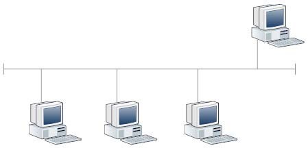
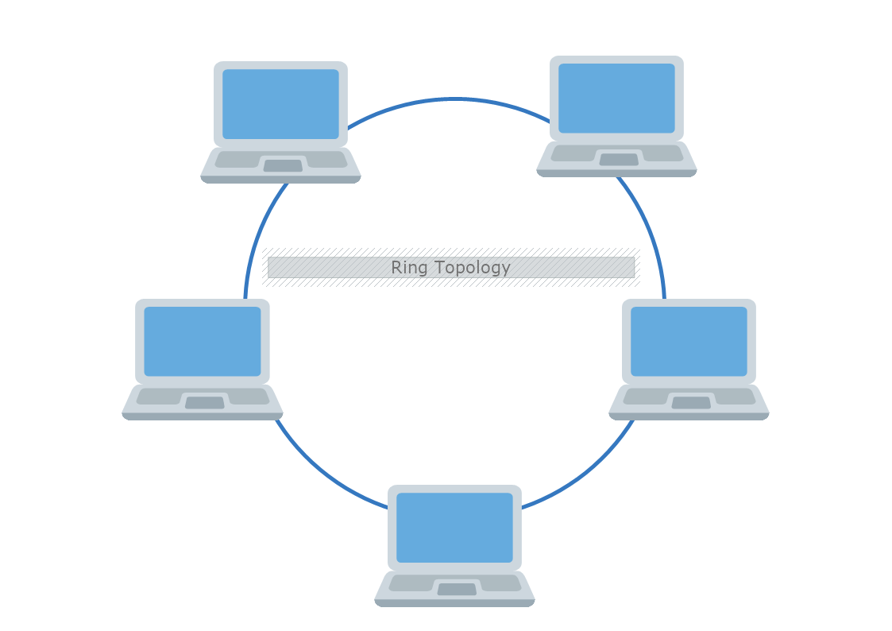
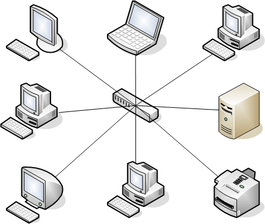
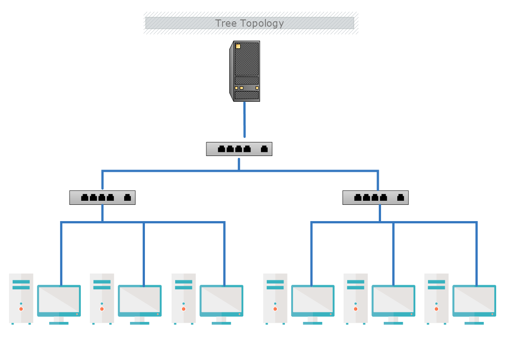
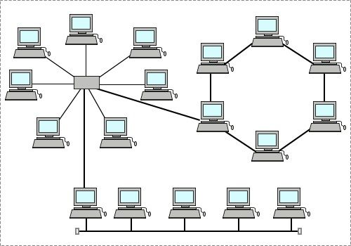

Под компютърна мрежа се разбира съвкупността от комуникационни връзки, хардуерни и софтуерни средства, които служат за обмен на данни между поне два компютъра. Локална мрежа – самостоятелна система, свързваща два или повече компютъра, разположени на разстояние до няколко стотици метри един от други. Обикновено те свързват организации на един етаж, в една сграда или в съседни сгради. Такива мрежи се изграждат към офиси на фирми, университети, институти, фондации, училища, министерства и др.
Връзките между отделните възли в мрежата могат да бъдат осъществени по различни начини. Конфигурацията на LAN се нарича топологията на мрежата. Според начина на свързване, компютърните мрежи се делят на мрежи с топология: шина, пръстен, звезда, дърво и смесени.




